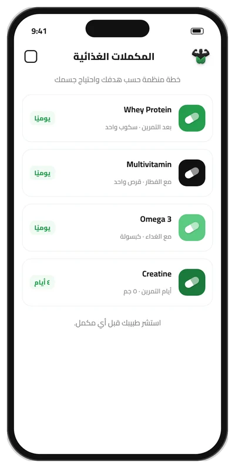

مميزات NutFit بلس
 متابعة شخصية مع د. محمد على الواتساب
متابعة شخصية مع د. محمد على الواتساب برنامج تمارين يناسب مستواك ومكانك
برنامج تمارين يناسب مستواك ومكانك- نظام غذائي متكامل حسب تفضيلاتك
كل الخطط فيها نفس مميزات NutFit بلس. الفرق بس في مدة الاشتراك.
كل اللي محتاجه عشان تحقق تغير ملحوظ من الأسابيع الأولى.

متابعة شخصية وتشجيع مستمر على الواتساب.

اختر هدفك ومستوى لياقتك، وهنبني لك خطة تمارين تناسبك وتساعدك توصل لنتيجتك بأفضل طريقة.

برنامج تمارين بيتعدّل حسب تقدمك، عشان تحقق هدفك أسرع.

وجبات من أكلك المعتاد بكميات محسوبة، مع بدائل وقائمة مشتريات.

قياسات دورية للوزن والوسط ونسبة الدهون، عشان تشوف تقدمك بالأرقام.

خطة مكملات منظمة على حسب هدفك واحتياج جسمك بجرعات دقيقة وآمنة.

لو التمرين مش مناسبك أو عايز تبدله، هتلاقي بدائل تناسب مستواك عشان تكمل تمرينك.
المميزات اللي عليها قفل متاحة في NutFit بلس.
يمكنك الاشتراك في أي وقت
لأ. النظام بيتعمل من أكلك المعتاد بكميات محسوبة، وفيه بدائل لكل وجبة. الهدف نظام تقدر تكمل عليه، مش حرمان أسبوعين.
أيوه، دي من أهم حالات التغذية العلاجية. بنراجع تحاليلك وأدويتك، ونعمل نظام يمشي معاها، مع استمرار متابعتك مع طبيبك.
أونلاين بالكامل: بتبعت بياناتك وتحاليلك، وبيوصلك النظام الغذائي وبرنامج التمرين، ومتابعة دورية على الواتساب لتعديل الخطة حسب تقدمك.
غالبًا أول تغيير بيبان في أول ٢ لـ ٤ أسابيع، والمعدل الصحي لنزول الوزن حوالي نص كيلو لكيلو في الأسبوع حسب الحالة.
لأ. فيه برامج للبيت من غير أدوات، وبرامج للجيم، حسب اللي يناسبك.
أيوه، بنظام مخصص لكل حالة، وبالتنسيق مع الطبيب المتابع.